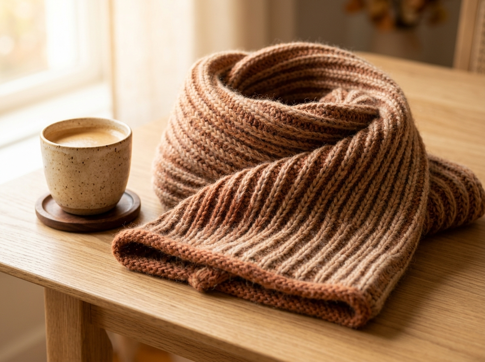

완성 예시 실물
도톰 볼륨핏

☁️ 변형고무뜨기 & 아이코드 엣지 목도리
가장자리 말림 없이 도톰하고 푹신한 기성복 프리미엄 핏
💡 제작 포인트: 아이코드 엣지가 양옆을 단단하게 잡아주어 사방으로 돌돌 말리지 않고 반듯하게 떨어집니다.
STEP 1 · 기본 스펙 설정
약 30초 소요
10cm 메리야스 게이지
4.5~6.0mm 바늘 권장
가로 코수 (10cm)
코
세로 단수 (10cm)
단
25cm
cm
180cm
cm
도출된 맞춤 도안 수치
실시간 오차 보정 완료
시작 잡아야 할 코수 (Cast-on)
47
코
패턴 배수 맞춤 코수 43코 + 아이코드 엣지 4코 = 총 47코
총 떠야 할 단수
432단
완성 길이 180cm 기준
예상 실 소요량
약 5~6볼
1볼 40g (약 80m) 기준
적용된 패턴 규칙
변형고무뜨기 (3n+2)
양 끝 아이코드 2코씩
PRACTICAL ROADMAP
도톰 폭신 기성복 프리미엄 공식
실전 목도리 뜨개 5단계 가이드 (변형고무뜨기)
print
도안 인쇄 및 PDF 내보내기
관리자 전용불필요한 웹 UI를 제거하고 핵심 수치와 5단계 실전 가이드만 A4 2장 규격으로 출력합니다.